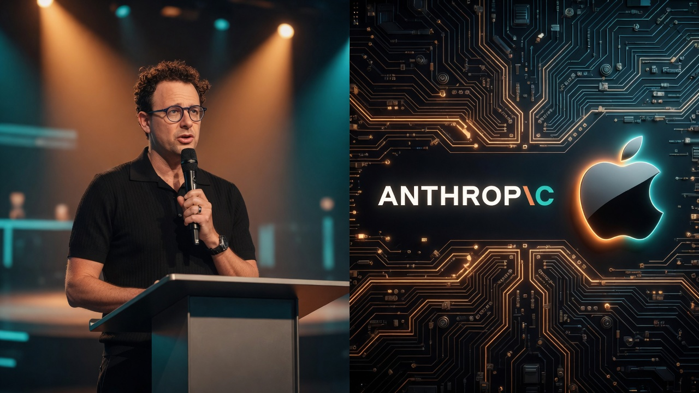
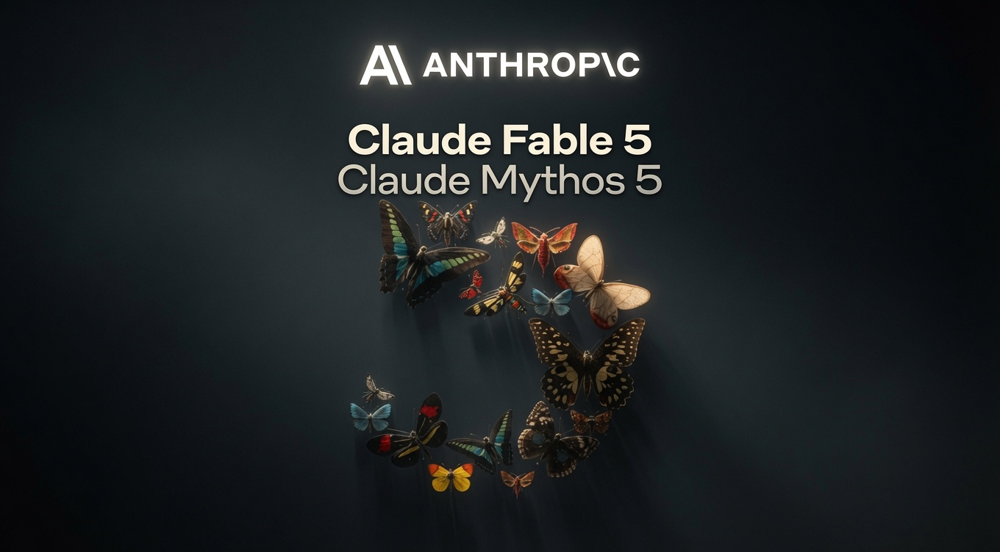
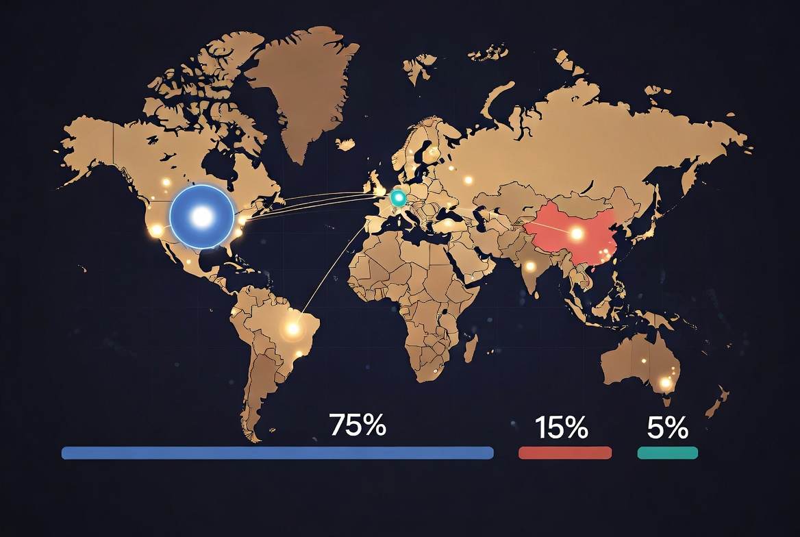

EVENT_1 : Apple Siri AI — EU DMA blocks iOS/iPadOS launchDATE : 08 June 2026 | Source: Apple NewsroomEVENT_2 :Anthropic Fable 5 + Mythos 5 — US export control directiveDATE :12 June 2026 | Source: Anthropic official statementEFFECT : Capability denial. Both events. EU users in both.REGULATOR :Not in the room for either decision.// This is not bilateral. This is multipolar. Read the data.STATUS :DOCUMENTED
Two capability denial events in four days. Two different regulatory logics. One structural failure neither bloc has publicly named. The US treats frontier AI as a strategic export-controlled asset. The EU regulates products it no longer produces at the frontier. Brussels was not in the room where either decision was made.
Mímir MímisbrunnrAnalysis13 June 2026The Hague, Netherlands
Estimated reading time: 12 minutes
The week of June 8, 2026 produced two separate acts of capability denial affecting European users. One came from a US technology company refusing to comply with EU regulatory demands on terms it considers incompatible with device safety architecture. The other came from the US government, which suspended access to a specific frontier AI model globally, citing national security. Both decisions were made without European regulators in the room. Both landed on European users the same way: as missing features, or models that simply went dark.
This article documents both events from primary sources, examines the structural logic each reveals, and names the broader geopolitical contest those logics are operating inside. The EU-US framing is the obvious one. It is also insufficient.
Event 1 — June 8, 2026: Apple publishes official newsroom statement. Siri AI will not ship in the EU with iOS 27 or iPadOS 27. No timeline. EU regulators rejected all proposed solutions including Apple's Trusted System Agent intermediary framework and an offered 18-month phased rollout. Source: Apple Newsroom.
Event 2 — June 12, 2026: Anthropic publishes official statement. US government issues export control directive. Fable 5 and Mythos 5 suspended for all foreign nationals globally, including Anthropic's own foreign employees. All other Claude models unaffected. Source: Anthropic official statement.

Dario Amodei (Anthropic) and Apple at the intersection of the emerging AI governance collision.
The Facts: Event One
Apple's position, stated in its official newsroom release, is that the Digital Markets Act as interpreted by the European Commission requires any third-party AI assistant to receive direct, autonomous access to user data and device controls the moment Siri AI is made available in the EU. That means read and send messages, make purchases, access files, and execute actions across any installed application, without ongoing user visibility or control.
Apple proposed a mitigation: a purpose-built intermediary called Trusted System Agent, which would give third-party virtual assistants equivalent capability access within a defined safety boundary. It also offered an 18-month phased rollout to allow regulatory review of that architecture. The European Commission declined both proposals.
Craig Federighi, Apple SVP Software Engineering, in the official statement: "Their refusal to engage constructively on solutions that preserve privacy and security means we do not currently have a timeline for Siri AI's availability on iOS and iPadOS in the EU."
The EU Commission's public response: the decision is Apple's and Apple's only. Nothing in the DMA prohibits new products.
Both statements are factually accurate. They describe incompatible positions, not a factual dispute. The DMA requires interoperability. Apple states it cannot deliver interoperability at the level the Commission requires without compromising the safety architecture it considers non-negotiable. One of them is wrong about what the DMA requires in practice, or both are right and the regulation as written produces this outcome. Either reading is a problem for the Commission's stated objectives.
Siri AI blocked in the EU: DMA interoperability requirements prevent launch on iOS and iPadOS.
The Facts: Event Two
Anthropic's official statement documents a directive arriving at 5:21pm ET on June 12 with no specific technical justification. Per reporting by Axios, the letter was signed by Commerce Secretary Howard Lutnick and sent directly to Anthropic CEO Dario Amodei. The legal instrument: a Commerce Department export control order requiring a license for the export, re-export, or domestic transfer of the Fable 5 and Mythos 5 models, with individually validated licenses for each application. Failure to comply carries financial and civil penalties.
The triggering claim, per an administration official who spoke to Axios: another company had reported being able to jailbreak Mythos 5, alarming the administration about possible national security risks. The Wall Street Journal subsequently identified the source of the jailbreak research as Amazon researchers. This is notable: the directive that disabled Anthropic's models globally was triggered not by a government internal finding, but by a third-party competitive lab's security report passed to the Commerce Department.
Axios further reported that the Trump administration had already attempted to get Anthropic to pause releasing Fable 5 and Mythos 5 before the models launched. Anthropic did not comply. The export control letter arrived afterward. The directive is therefore documented as a second-step escalation following a refused voluntary request, not a first-contact action.
Anthropic's documented position on the technical claim: the capability described is widely available from other publicly deployed models including OpenAI's GPT-5.5, is used daily by defenders in the security industry, and does not represent Mythos-specific uplift. No universal jailbreak was found by any tester, including the US government, UK AISI, and multiple private third-party organisations that collectively ran thousands of hours of red-teaming prior to launch. Anthropic stated explicitly at launch that perfect jailbreak resistance is not achievable by any current model provider, and built its strategy around defense-in-depth rather than a claim of invulnerability.
Anthropic is complying with the directive and disagrees with its basis: "We disagree that the finding of a narrow potential jailbreak should be cause for recalling a commercial model deployed to hundreds of millions of people. If this standard was applied across the industry, we believe it would essentially halt all new model deployments for all frontier model providers."

Claude Fable 5 and Claude Mythos 5 — suspended globally for non-US users by US export control directive.
Event Comparison — Documented Facts
Apple / DMA triggerInteroperability requirements Apple states cannot be met safely
Apple / DMA effectSiri AI unavailable on iPhone and iPad in EU — no timeline
Anthropic directive authorCommerce Secretary Howard Lutnick — letter to CEO Dario Amodei
Triggering sourceAmazon researchers — jailbreak claim passed to Commerce Dept
Prior escalationTrump admin asked Anthropic to pause release — refused — directive followed
Anthropic / export control effectFable 5 + Mythos 5 disabled globally — all non-US users
Coordination between eventsNone documented. Independent actions.
EU in either decisionNo
Two Regulatory Logics, One Asymmetry
These events share no common legal mechanism and no evidence of coordination. What they share is a structural logic, and that logic is worth examining precisely.
EU — DMA logic
Product regulation. Defines conduct rules for designated gatekeepers in the single market. Its instrument is access: it requires platform features to be interoperable and rival services to receive equivalent capability. The theory of harm it addresses is market foreclosure and competitive distortion. Applies to products regardless of where they are produced.
US — Export control logic
Strategic asset control. Restricts access by category of person on national security grounds. The legal framework is the same apparatus applied to semiconductors, encryption, and aerospace components. It is now applied to a specific high-capability AI model. The instrument inverts: rather than requiring access, it denies it, to specific categories of person, globally.
The EU asks: who can access the platform's capabilities, and on what terms? The US asks: who is permitted to access this capability at all, and the answer for some categories is no.
These are not variations on the same question. A jurisdiction applying DMA-style interoperability logic to dual-use AI capability is using a consumer market instrument on a strategic asset. A jurisdiction applying export control logic to a commercial AI product deployed to hundreds of millions of users is treating a consumer product as a weapons-adjacent system. Both create friction. The friction lands on users in jurisdictions that produced neither the product nor the security assessment.
The US has now explicitly applied strategic export control logic to a specific commercial AI model. That is new. It establishes a precedent: frontier AI capability can be treated as a controlled national asset subject to the same access restriction mechanisms historically reserved for hardware with weapons applications.
Two distinct regulatory logics: EU DMA consumer-market access rules versus US national-security export controls.
This Is Not a Bilateral Contest
Framing this as EU versus US misses the actual contest. The AI race in mid-2026 is multipolar, and the positions of each actor determine what the EU's regulatory choices actually cost.
United States
Frontier edge via massive scaling, capital concentration, innovation density. Labs now treating top models as strategic national assets subject to export control architecture.
China
Closing frontier gaps via open-weight efficiency, rapid iteration, cost-performance leadership. Parallel dominance in robotics manufacturing at scale Western competitors have not matched. DeepSeek, Qwen, Moonshot K2, ByteDance Doubao.
Russia
Sovereign model strategy under hardware constraints. GigaChat, YandexGPT. Supplying alternatives to markets seeking independence from Western AI infrastructure. Lower benchmark performance, high localisation value.
European Union
Regulatory authority over products it does not produce at the frontier. ~5% of global high-end AI compute. Mistral is the primary frontier contender. DMA, AI Act, GDPR define the bloc's instrument: conduct rules for others' platforms.
The compute asymmetry is not contested. According to Epoch AI datasets, as cited in Bruegel analysis and a Federal Reserve note on AI competition in advanced economies (October 2025): the EU holds approximately 5% of global high-end AI compute capacity. The United States holds approximately 74-75%. In 2025, US hyperscalers were on course for aggregate AI and data centre investment approaching $400 billion. The EU's InvestAI initiative, announced February 2025, targeted €200 billion total mobilisation including a €20 billion Gigafactories programme. The Commission's own press release confirms these figures.
Mistral, the most prominent European frontier contender, raised €1.7 billion in a 2025 Series C, followed by $830 million in debt financing in 2026 for compute expansion. OpenAI raised $122 billion in a single round in early 2026. These numbers are not comparable and do not become comparable through regulatory activity.

Global high-end AI compute concentration (Epoch AI data): US ~75%, China ~15%, EU ~5%.
The Inference Control Trajectory
The Anthropic directive is not a standalone event. It sits within a logical progression that the published scenario document Europe 2031 — authored by Daan Juijn, Stan van Baarsen, Judith Dada, and others — traces in its speculative section from August 2026 onward. That section is clearly labelled as scenario, not prediction. The structural mechanism it identifies, however, is already operating.
The Export Control Precedent Chain — Traceable History
2020
Huawei restriction. US invokes Foreign Direct Product Rule. Any product made anywhere using American technology or software subject to US jurisdiction. Huawei effectively cut off from TSMC supply chain.
2022–2024
NVIDIA chip export controls. Progressive restriction of H100 and A100 exports to China. Compute as strategic asset made explicit. ASML DUV machine export restrictions follow under US pressure on the Netherlands.
June 12, 2026
Fable 5 / Mythos 5 directive.First documented application of export control logic directly to a specific commercial AI model. Foreign national access suspended globally. Model disabled for all customers for compliance. Disputed technical basis; compliance confirmed.
The same legal and institutional apparatus used for semiconductors is now available for model access. The precedent is set. Whether the current directive is restored, disputed, or reversed, the mechanism has been demonstrated. A national security authority can suspend a commercial AI model's global access within hours of a finding that the model's developer itself disputes.
The Europe 2031 scenario traces one plausible consequence of this trajectory: progressive inference rationing by ally tier, EU firms losing competitive access to frontier capabilities as the gap between US compute buildout and EU compute buildout compounds. It is a scenario, not evidence. But the structural conditions it identifies are confirmed by the primary data already cited: compute dependency, no frontier production at scale, regulatory authority without productive leverage.
What Brussels Has Not Said
European users, businesses, hospitals, governments, and critical infrastructure operators running on US-origin frontier AI are operating on infrastructure whose availability is contingent on US national security judgment. That is not a hypothetical risk. It was demonstrated on June 12, 2026. The models are expected to be restored. The precedent is not.
The EU's standard response to technology dependency is regulation. The DMA, the AI Act, the Data Act, GDPR — these are conduct rules for others' platforms. They generate compliance costs and deployment delays. They do not generate frontier models. The Apple/DMA outcome demonstrates the failure mode of regulatory authority without productive capacity: the regulator issues requirements, the platform holder cannot meet them without compromising architecture it considers essential, and EU users lose the capability.
The one genuine point of EU leverage in the entire AI hardware stack is ASML — the Dutch company that manufactures EUV lithography equipment used to print cutting-edge chips, which no other company in the world currently produces. That leverage has already been tested: the US applied pressure on the Netherlands in 2023 to restrict ASML's DUV machine exports to China, and the Dutch ultimately complied. The Europe 2031 scenario explores what happens when that lever is pulled further. The factual prologue of that document, covering January 2025 through June 2026, is grounded in documented events.
The European Commission has not publicly addressed what the Anthropic export directive means for European digital sovereignty. The question it has not answered is direct: if the United States can suspend access to a frontier model for all foreign nationals globally, by directive, within hours, on a disputed technical finding, what does that mean for European institutions that have built operational dependencies on US-origin frontier AI?
That silence is a position.
Brussels exercises regulatory authority over frontier AI capabilities it does not produce at scale.
The Argument Lands in Real Time
The structural argument in this article is not abstract. Within hours of the Anthropic directive becoming public on June 13, Geert Wilders, leader of the PVV and the largest party in the Dutch parliament, posted publicly on X: "I want my Anthropic Claude Fable 5 back. We must excellerate building our own. AI is more and more national sovereignty." The post, time-stamped 13:28 CET June 13, 2026, included a screenshot of the Claude model selector showing Fable 5 marked as currently unavailable. It reached 35,000 views within the hour.
ETH does not endorse Wilders or his political programme. What the post documents is something precise: a named European political actor, the leader of a major governing coalition party in the Netherlands, publicly naming AI as a sovereignty matter in direct response to a US export control action, on the day it happened. The conclusion the article identifies as unspoken is being spoken, in Dutch politics, already.
The European Commission has not responded. That asymmetry is also data.
Bottom Line
Two capability denial events in four days. Independent causes, convergent effect: EU users lose access to AI capabilities available in other jurisdictions.
The Apple/DMA case: EU regulatory interpretation requires interoperability terms Apple states it cannot meet without compromising device safety architecture. EU users on iPhone and iPad have no Siri AI at launch. No timeline.
The Anthropic/export control case: US national security directive suspends frontier model access for all foreign nationals globally. All non-US users lose Fable 5 and Mythos 5, pending resolution of a disputed technical finding.
The macro structural observation: the US has applied export control logic to a commercial AI model. China is closing frontier gaps while building robotics manufacturing dominance at a scale Western competitors have not matched. Europe holds approximately 5% of global AI compute and regulatory authority over products it does not produce at the frontier. ASML — the one genuine point of EU hardware leverage in the AI supply chain — operates under constraints already tested by Washington.
The AI governance contest has moved from policy papers and fines to actual capability denial and deployment friction. European users are already on the receiving end of both sides of it. How the bloc responds — more conduct regulation, or a serious reckoning with productive capacity — will determine whether it retains any room to negotiate its own position between the powers that are actually running the race.
Geert Wilders (@geertwilderspvv), 13 June 2026, 13:28 CET: public post on X — "I want my Anthropic Claude Fable 5 back. We must excellerate building our own. AI is more and more national sovereignty."
Europe 2031 scenario (factual prologue January 2025 — June 2026): europe2031.ai — Authors: Daan Juijn, Stan van Baarsen, Judith Dada, Lily Stelling, Philip Fox, Alex Petropoulos, Michiel Bakker
Both statements are publicly available. The compute data is traceable. The Europe 2031 scenario is open access. Read them in full and form your own assessment.